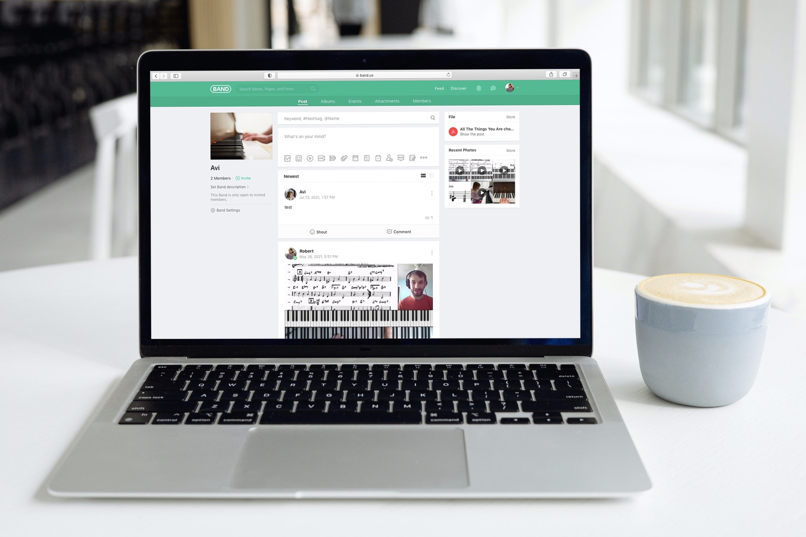
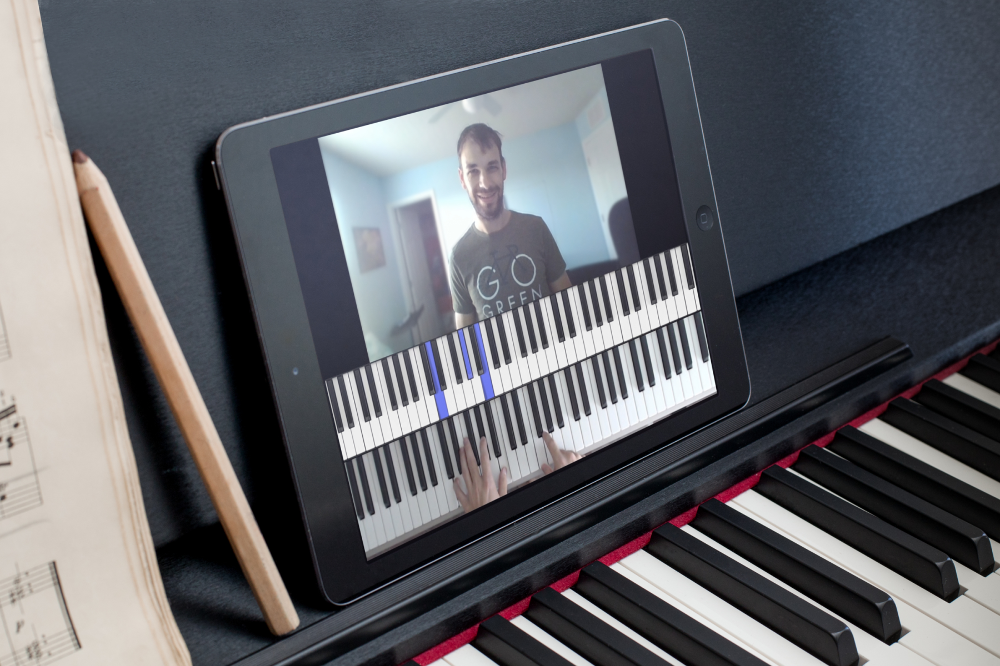
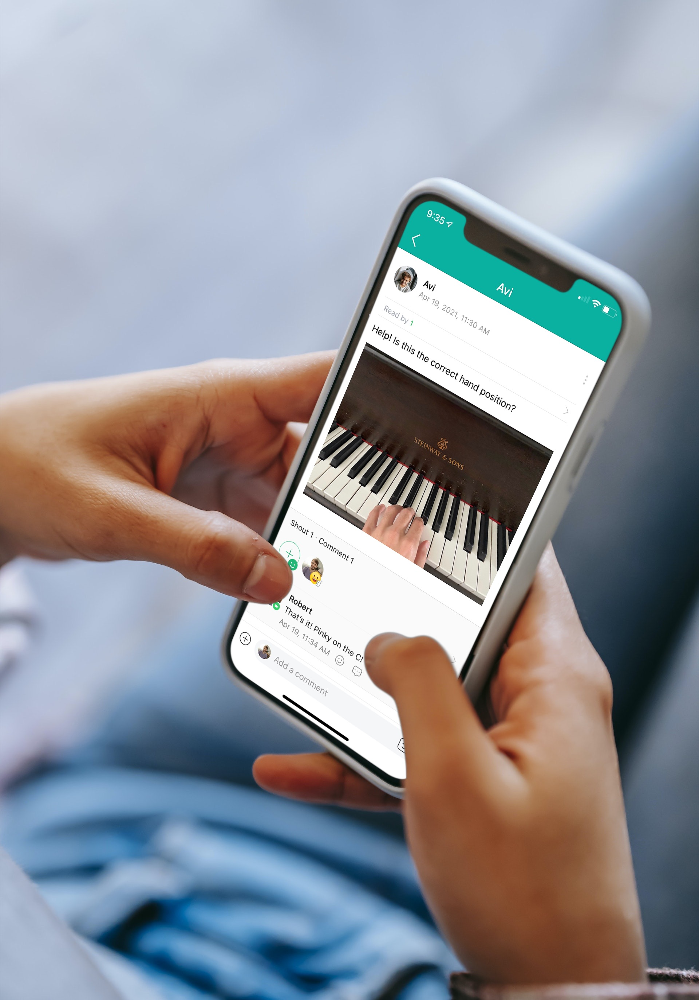
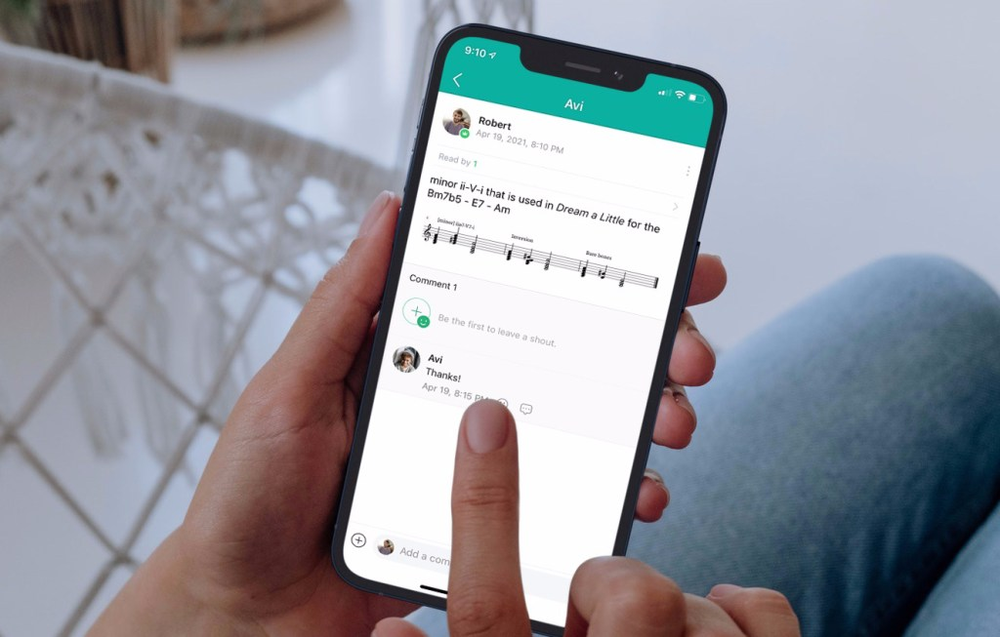

The Studio Hub
Band is a private communication platform that takes the place of texting, emailing, dropbox, and much much more. It’s the central hub for everything in the studio and is what enables this continuous learning all week long. It’s available as an app for your phone, iPad, or viewable on the web from anywhere.

The week begins with your personalized video lesson. It is a content-rich, fun, and action packed lesson recorded just for you with new material, demonstrations, guided practice, and feedback from the week before. And it is “posted” on Band.
Whenever you have the time, you can sit at the piano and begin working alongside me — asynchronously. Pause, rewind, and fast forward at your leisure. Watch it all in one sitting, or split it up across several days. And when you have a question, you don’t have to wait until next week.

With Band, it’s almost as if I’m always sitting next to you while you’re practicing. Comment on the video you’re working with and ask for help. Take a picture of your sheet music or hands to confirm you’re doing the correct thing. Ask questions. And I will be able to answer them with a few words, a picture, video, and more.

This interactive, back-and-forth communication really turns the weekly “piano lesson” as we know it upside down.
But there’s more. I can check in with you during the week to see how things are going. I can send supplemental material like PDFs, links, MP3s, practice tracks.

And once the week comes to a close, it’s your turn to share with me. This part is essential for asynchronous lessons. You record a video—directly in the BAND app from your phone or tablet. It’s not a performance—it’s just meant to show me your real progress, find out what stuck and what worked, and it gives me an idea of how to focus the next lesson I record for the following week. If you are really a perfectionist, you can record as many times as you’d like to get the take that you think really encapsulates your progress that week.